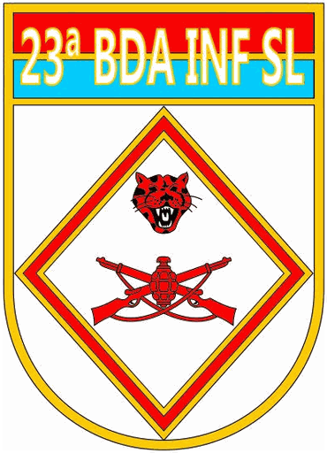
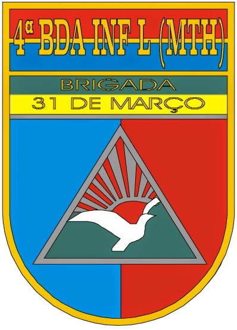

1DE · Tropas leves
1ª Divisão de Exército
Estrutura temática de tropas leves, com formações de selva, Pantanal, montanha, paraquedismo, Caatinga e emprego aeromóvel. Nesta página estão reunidas as brigadas vinculadas à divisão no projeto FAAAB.

Brigadas subordinadas
5 brigadas temáticas cadastradas na FAAAB. Cada item abre o site próprio da brigada; as tropas de Caatinga têm uma área separada.

Brigada de Infantaria de SelvaAtuação na selva e em regiões de fronteira. Brigada de Infantaria de PantanalAmbiente de Pantanal e 17º Batalhão de Fronteira.
Brigada de Infantaria de MontanhaAtuação em montanha e terrenos elevados. Brigada de Infantaria ParaquedistaFormações paraquedistas e de precursores.
Brigada de Infantaria ParaquedistaFormações paraquedistas e de precursores.
 Brigada de Infantaria Leve (Aeromóvel)Emprego de tropas leves aeromóveis.
Brigada de Infantaria Leve (Aeromóvel)Emprego de tropas leves aeromóveis.
Tropas de Caatinga
Abrir área de Caatinga →
72º BI Caat — agrupamento temático da FAAAB, sem criação de uma brigada fictícia.